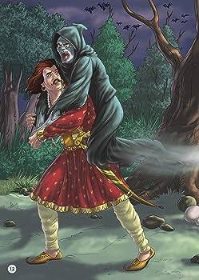

15.હસતાં પહેલાં ચોર કેમ રડ્યો ?
|
ફરી એકવાર રાજા વિક્રમાદિત્ય બેતાલને ઝાડ પરથી ઉતારે છે, તેને પોતાના ખભા પર લઈ જાય છે અને યોગી તરફ આગળ વધવા લાગે છે.
આ દરમિયાન બેતાલ ફરીથી રાજાને નવી વાર્તા સંભળાવે છે અને શરત એ જ છે કે જો રાજા મોઢું ખોલશે તો તે
ઉડી જશે અને જો તે જાણ્યા પછી પણ જવાબ નહીં આપે તો રાજાની ગરદન ભાંગી નાખશે. બેતાલ રાજાને કહે છે...
 ઘણા વર્ષો પહેલા અયોધ્યા શહેરમાં વીરકેતુ નામનો રાજા રાજ કરતો હતો. આ જ રાજ્યમાં એક શાહુકાર પણ રહેતો હતો.
શ્રીમંત શાહુકારનું નામ રત્નદત્ત હતું. તેમને એક જ સુંદર પુત્રી હતી, રત્નાવતી. રત્નાવતી માટે ઘણા સંબંધો આવ્યા,
પરંતુ તે કોઈની સાથે લગ્ન કરવા રાજી ન થઈ. આ કારણે તેના પિતા ખૂબ જ પરેશાન હતા.
રત્નાવતીને એવો વર જોઈતો હતો જે માત્ર સુંદર અને ધનવાન જ નહીં પણ બુદ્ધિશાળી અને મજબૂત પણ હોય.
ઘણા વર્ષો પહેલા અયોધ્યા શહેરમાં વીરકેતુ નામનો રાજા રાજ કરતો હતો. આ જ રાજ્યમાં એક શાહુકાર પણ રહેતો હતો.
શ્રીમંત શાહુકારનું નામ રત્નદત્ત હતું. તેમને એક જ સુંદર પુત્રી હતી, રત્નાવતી. રત્નાવતી માટે ઘણા સંબંધો આવ્યા,
પરંતુ તે કોઈની સાથે લગ્ન કરવા રાજી ન થઈ. આ કારણે તેના પિતા ખૂબ જ પરેશાન હતા.
રત્નાવતીને એવો વર જોઈતો હતો જે માત્ર સુંદર અને ધનવાન જ નહીં પણ બુદ્ધિશાળી અને મજબૂત પણ હોય.
અન્ય રત્નાવતીના પિતા તેમની પુત્રીથી નારાજ હતા. બીજી તરફ, શહેરમાં ચોરી શરૂ થઈ ગઈ હતી,
જેના કારણે રત્નદત્તને હંમેશા ડર રહેતો હતો કે કોઈ ચોર તેના ઘરમાંથી તમામ પૈસા લઈ જશે. દરમિયાન, રત્નાવતી ચોરને મળે છે.
રત્નાવતીને લોકોના ઘરમાંથી ફળો તોડીને ખાવાની મજા આવતી. તે ચોર રત્નાવતીને કેરી ચોરતા શીખવે છે.
છોકરી તેનાથી ખૂબ પ્રભાવિત થાય છે અને દરરોજ તેને મળવા લાગે છે. સમય જતાં તે ચોરના પ્રેમમાં પડી જાય છે.
અહીં ચોર રત્નાવતીને મળ્યા પછી રોજ ચોરી કરવા નીકળતો હતો.
બીજી તરફ અયોધ્યામાં વધી રહેલી ચોરીઓથી પરેશાન રાજાએ તમામ મંત્રીઓ અને ગૌરક્ષકોને ઠપકો આપતા કહ્યું કે,
“શહેરમાં દરરોજ ચોરીઓ થઈ રહી છે, પરંતુ ન તો કોઈ રક્ષક તેમને પકડી શકવા સક્ષમ છે અને ન તો કોઈ મંત્રી તેને પકડવા સક્ષમ છે.
તેમને પકડવાની યોજના. થતો હતો." આ પછી રાજાએ પોતે જ ચોરને પકડવાનું નક્કી કર્યું. રાજા ચોરને પકડવા માટે દરરોજ રાત્રે શહેરમાં ફરવા લાગ્યો.
એક દિવસ રાજાએ જોયું કે રાત્રે કોઈને ઘરમાં કૂદી પડ્યું. રાજાને શંકા જતાં તે પણ તેની પાછળ ગયો.
રાજા ત્યાં પહોંચતા જ ચોરે તેને જોયો અને કહ્યું, “હે! મને લાગતું હતું કે અહીં હું જ ચોર છું. તમે પણ અહીં ચોરી કરવાના ઇરાદે આવ્યા છો.
રાજા કંઈ બોલતો નથી. આ પછી ચોર કહે, “તું પણ ચોરી કરવાના ઈરાદે આવ્યો છે અને હું પણ.તેથી તમારે મારાથી ડરવાની જરૂર નથી.
તમે એક રીતે મારા મિત્ર છો.” આ પછી ચોર રાજા વીરકેતુને પોતાના ઘરે બોલાવે છે. ચોરની વિનંતી સાંભળીને રાજા તેની સાથે જાય છે.
ચોર તેમને તેની ગુફામાં લઈ જાય છે, જ્યાં તેણે ચોરીના બધા પૈસા છુપાવ્યા હતા. ગુફામાં આટલી બધી સંપત્તિ અને આરામ જોઈને રાજા વીરકેતુ આશ્ચર્યચકિત થઈ ગયા.
થોડી વાર પછી રાજાએ ચોરને પૂછ્યું, “તમે આટલા પૈસા ભેગા કર્યા છે. તમે ચોરી કરતા ડરતા નથી.” ચોર જોરથી હસે છે અને કહે છે,
“રાજાનાં સૈન્યમાં કોઈ હિંમતવાન નથી કે તેઓ પોતાનું કામ ઈમાનદારીથી કરતા નથી.
જો એક વ્યક્તિએ પણ પોતાનું કામ ઈમાનદારીથી કર્યું હોત તો મને પકડવામાં આટલી મુશ્કેલી ન પડી હોત.
એક ચોરે રાજાની આખી સેનાને હરાવી દીધી છે. ત્યાં કોઈ યોદ્ધા નથી.” આ સાંભળીને રાજાએ પોતાની તલવાર કાઢી અને ચોર સાથે લડીને તેને બંદી બનાવી લીધો.
ચોરને આશ્ચર્ય થયું. થોડા સમય પછી તેને ખ્યાલ આવ્યો કે રાજા આટલા લાંબા સમય સુધી વેશમાં તેની સાથે હતો.
રાજા વીરકેતુ તેને મહેલમાં લઈ જાય છે અને મૃત્યુદંડની સજા આપે છે.
ચોર પકડાઈ ગયો છે અને ફાંસી પર લટકાવવાનો છે એવી જાહેરાત થતાં જ રત્નાવતી ચિંતિત થઈ ગઈ.
તેને ખબર પડી કે રાજ્યમાં ચોરી કરનાર વ્યક્તિએ તેને કેરીઓ ચોરી શીખવી હતી. વ્યથિત થઈને રત્નાવતી તેના પિતા રત્નદત્તને કહે છે,
“પિતાજી, જે માણસને મેં મારા હૃદયમાં મારા પતિ માન્યા છે, તેને રાજાએ પકડી લીધો છે અને તે તેને ફાંસી આપવા જઈ રહ્યો છે.
તમે કંઈક કરો.” રત્નદત્તને સમજાતું નથી કે તેમની દીકરી શું બોલી રહી છે.
તે પછી તેણી તેના પિતાને ચોર અને તેમની મુલાકાત વિશે વિગતવાર કહે છે અને કહે છે કે તે તેના વિના જીવી શકશે નહીં.

રત્નદત્ત તેની પુત્રીને સમજાવવાનો પ્રયાસ કરે છે. જ્યારે પુત્રી રાજી ન થાય ત્યારે તેને રાજા પાસે જવાની ફરજ પડે છે.
તે રાજાને કહે છે કે તેની પુત્રી રત્નાવતી ચોરને ખૂબ પ્રેમ કરે છે. જો તેણીને ફાંસી આપવામાં આવે છે, તો તેણી તેના જીવનનું બલિદાન પણ આપશે.
વેપારી તેની પુત્રીની ખાતર રાજાને સોનાના સિક્કા અને ચોર દ્વારા ચોરી કરેલા તમામ પૈસા આપવાની ઓફર કરે છે, પરંતુ રાજા તેની વાત સાંભળતો નથી.
થોડા સમય પછી, રત્નાવતી મહેલમાં પહોંચે છે. તેણી રાજાને વિનંતી પણ કરે છે, પરંતુ રાજા કોઈનું સાંભળતો નથી અને જલ્લાદને ચોરને ઝડપથી ફાંસી આપવા કહે છે.
જ્યારે ચોરને ફાંસી પર લટકાવવામાં આવે છે, તે પહેલા રડે છે અને પછી જોરથી હસવા લાગે છે.
ચોરને ફાંસીએ લટકાવવાની સાથે જ છોકરી પણ પોતાનો જીવ આપવાનો પ્રયાસ કરે છે. તે જ ક્ષણે આકાશવાણી છે.
ભગવાન રત્નાવતીને કહે છે, “હે દીકરી! તમારો પ્રેમ ખૂબ જ શુદ્ધ છે. તમારા તરફથી આ પ્રેમ જોઈને અમે ખૂબ જ ખુશ છીએ.
તમે પૂછો, તમને જે જોઈએ તે.” આ સાંભળીને રત્નાવતી કહે છે, "મારા પિતાને કોઈ પુત્ર નથી, કૃપા કરીને તેમને સો પુત્રો થાય તે માટે કૃપા કરો."
ફરી એકવાર, આકાશમાંથી અવાજ આવ્યો, "એવું હશે, પરંતુ તમે થોડા વધુ વરદાન માંગી શકો છો." ત્યારે રત્નાવતી કહે છે,
"હું તે ચોરને ખૂબ પ્રેમ કરું છું, જો શક્ય હોય તો, કૃપા કરીને તેને જીવતો પાછો લાવો." રત્નાવતી વરદાન માંગે કે તરત જ ચોર જીવતો થઈ જાય છે.
અહીં, આ બધું જોઈને રાજા ખૂબ જ આશ્ચર્યચકિત થઈ જાય છે. બીજી તરફ, જીવનમાં પાછા આવ્યા પછી,
ચોર ફરી એકવાર રડે છે અને પછી જોરથી હસવા લાગે છે. આ દરમિયાન રાજા ચોરને કહે છે, "જો તમે સાચા માર્ગ પર ચાલવાનું વચન આપો છો,
તો હું તમને રાજ્યનો સેનાપતિ જાહેર કરવા તૈયાર છું". ચોર ખુશીથી સંમત થાય છે.
આવી વાર્તા કહીને બેતાલ ચૂપ થઈ જાય છે. પછી વિક્રમાદિત્યને પૂછે છે,
“હે રાજા! મને કહો, એ ચોર ફાંસી પર લટકતી વખતે પહેલા કેમ રડ્યો અને પછી જીવતો કેમ હસવા લાગ્યો?"
રાજાએ જવાબ આપ્યો, “સાંભળો બેતાલ, ચોરને દુ:ખ થયું કે તેણે તેના જીવનમાં માત્ર ચોરી કરી છે, છતાં આટલી સુંદર છોકરી તેના માટે મરવા તૈયાર હતી.
પછી તે હસ્યો કારણ કે તેણે વિચાર્યું કે એક છોકરી જેની સાથે રાજકુમાર પણ લગ્ન કરવા માંગતો હતો તે ચોર સાથે પ્રેમમાં પડી ગઈ.
પુનરાજીવનમાં આવ્યા પછી, તે નવું જીવન મેળવીને રડ્યો અને ભગવાનનો ખેલ જોઈને ખુશ થઈ ગયો.
ફરી એકવાર, સાચો જવાબ મળ્યા પછી, ભમરો ઉડી ગયો અને ઝાડ પર લટકી ગયો.
સત્ય અને પરિશ્રમનો માર્ગ અપનાવીને વ્યક્તિના ભૂતકાળના ખરાબ કાર્યોને હરાવી શકાય છે.
સારાંશ :
પહેલો પાઠ એ છે કે પ્રેમમાં મોટી શક્તિ હોય છે. બીજો પાઠ એ છે કે જીવનમાં યોગ્ય વ્યક્તિની પસંદગી કરીને ઘણી સમસ્યાઓ ટાળી શકાય છે